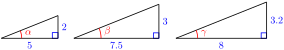
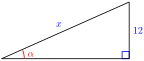
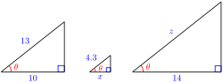
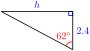
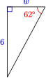
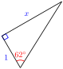

Chapter 2 The Trigonometric Ratios
\(\displaystyle \blert{\textbf{Side and Angle Relationships}}\)
\(\displaystyle \blert{\textbf{Right Triangle Trigonometry}}\)
\(\displaystyle \blert{\textbf{Solving Right Triangles}}\)
How would you measure the distance to an inaccessible obect, such as a ship at sea? In the 6th century BC, the Greek philosopher Thales estimated the distances to ships at sea using triangulation, a method for calculating distances by forming triangles. Using trigonometry and the measured length of just one side, the lengths of the other sides can be calculated.
Triangulation has been used to compute distances ever since. In the 16th century mapmakers began to use triangulation to position far-away places accurately. And as new methods in navigation and astronomy required greater precision, the idea of a survey using chains of triangles was developed.
In 1802, the East India Company embarked on the Great Trigonometrical Survey of India. Its goal was to measure the entire Indian subcontinent with scientific precision.
The surveyors began by measuring a baseline near Madras. The baseline was the only distance they measured; all other distances were calculated from it using measured angles. Each calculated distance became the base side of another triangle used to calculate the distance to another point, which in turn started another triangle. Eventually this process formed a chain of triangles connecting the origin point to other locations.
Because of the size of the area to be surveyed, the surveyors did not triangulate the whole of India but instead created what they called a "gridiron" of triangulation chains running from North to South and East to West. You can see these chains in the map of the survey.
The Survey was completed in 1871. Along the way it calculated the height of the Himalayan giants: Everest, K2, and Kanchenjunga, and provided one of the first accurate measurements of a section of an arc of longitude.
Triangulation today is used for many purposes, including surveying, navigation, metrology, astrometry, binocular vision, and location of earthquakes.
Activity 2.1. Trigonometric Ratios.
-
Using Ratios and Proportions
Two related quantities or variables are proportional if their ratio is always the same.
-
On any given day, the cost of filling up your car's gas tank is proportional to the number of gallons of gas you buy. For each purchase below, compute the ratio
\begin{equation*} \dfrac{\text{total cost of gasoline}}{\text{number of gallons}} \end{equation*}Gallons of Gas Purchased Total Cost \(\dfrac{\text{Dollars}}{\text{Gallon}}\) \(5\) $\(14.45\) \(\hphantom{0000}\) \(12\) $\(34.68\) \(\hphantom{0000}\) \(18\) $\(52.02\) \(\hphantom{0000}\) Write an equation that you can solve to answer the question: How much does 21 gallons of gas cost? Use the ratio \(\dfrac{\text{Dollars}}{\text{Gallon}}\) in your equation.
Write an equation that you can solve to answer the question: How many gallons of gas can you buy for $46.24? Use the ratio \(\dfrac{\text{Dollars}}{\text{Gallon}}\) in your equation.
-
-
A recipe for coffee cake calls for \(\dfrac{3}{4}\) cup of sugar and \(1\dfrac{3}{4}\) cup of flour.
-
What is the ratio of sugar to flour? Write your answer as a common fraction, and then give a decimal approximation rounded to four places.
For parts (b) and (c) below, write an equation that you can solve to answer the question. Use the ratio \(\dfrac{\text{Amount of sugar}}{\text{Amount of flour}}\)in your equation.
How much sugar should you use if you use 4 cups of flour? Compute your answer two ways: writing the ratio as a common fraction, and then writing the ratio as a decimal approximation. Are your answers the same?
How much flour should you use if you use 4 cups of sugar? Compute your answer two ways: writing the ratio as a common fraction, and then writing the ratio as a decimal approximation. Are your answers the same?
-
-
You are making a scale model of the Eiffel tower, which is 324 meters tall and 125 meters wide at its base.
-
Compute the ratio of the width of the base to the height of the tower. Round your answer to four decimal places.
Use your ratio to write equations and answer the questions below:
If the base of your model is 8 inches wide, how tall should the model be?
If you make a larger model that is 5 feet tall, how wide will the base be?
-
-
Similar Triangles
-
Recall that two triangles are similar if their corresponding sides are proportional. The corresponding angles of similar triangles are equal.
-
What is the ratio of the two given sides in each triangle? Are the corresponding sides of the three triangles proportional? How do we know that \(\alpha = \beta = \gamma\) ?
 Find the hypotenuse of each right triangle.
Use the sides of the approporiate triangle to compute \(\sin \alpha,~ \sin \beta,\) and \(\sin \gamma\text{.}\) Round your answers to four decimal places. Does the sine of an angle depend on the lengths of its sides?
-
How do you know that the triangle below is similar to the three triangles in part (a)? Write an equation using the ratio from part (c) to find \(x\text{.}\)

-
-
In the three right triangles below, the angle \(\theta\) is the same size.
Use the first triangle to calculate \(\cos \theta\text{.}\) Round your answer to four decimal places.
In the second triangle, explain why \(\dfrac{x}{4.3} = \dfrac{10}{13}\text{.}\) Write an equation using your answer to part (a) and solve it to find \(x\text{.}\)
Write and solve an equation to find \(z\) in the third triangle.
-
Use your calculator to find the value of \(\dfrac{h}{2.4}\text{.}\) (Hint: Which trig ratio should you use?) What is the length of side \(h\text{?}\)
 -
What is the value of \(\dfrac{6}{w}\) for the triangle below? Write an equation and solve for \(w\text{.}\)
 Write an equation and solve it to find \(x\) in the triangle above.
-
-